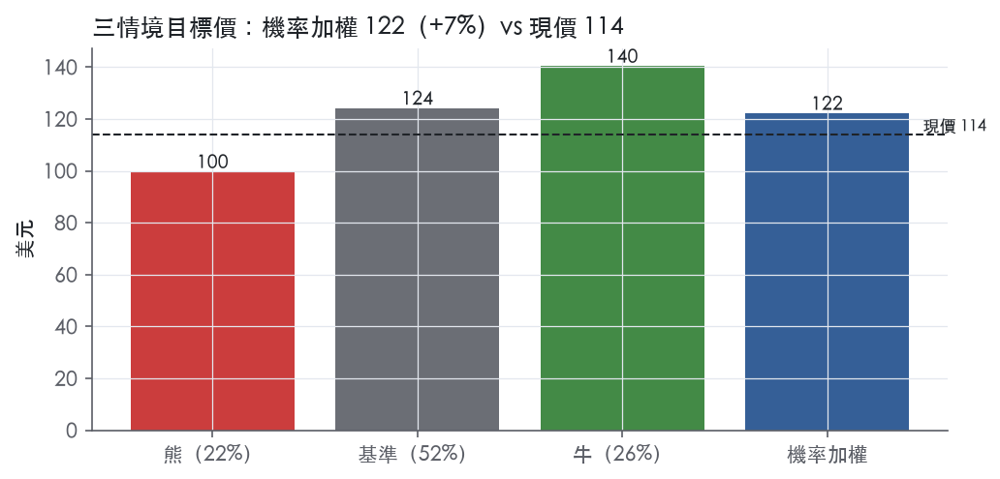
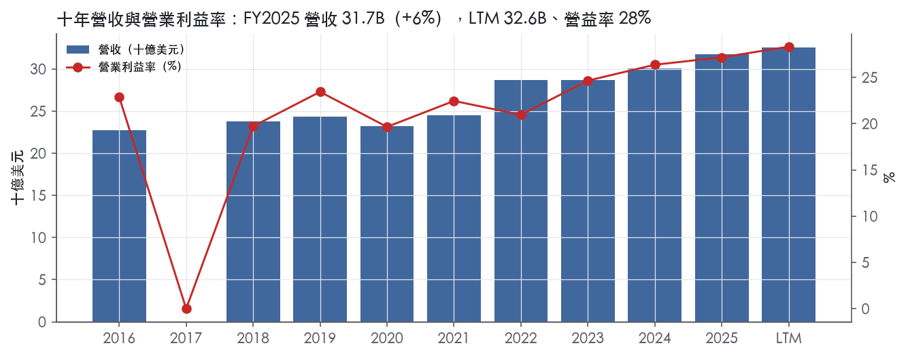
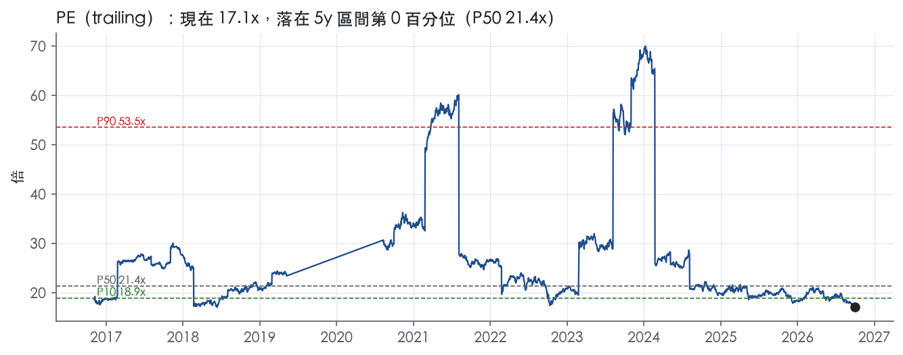
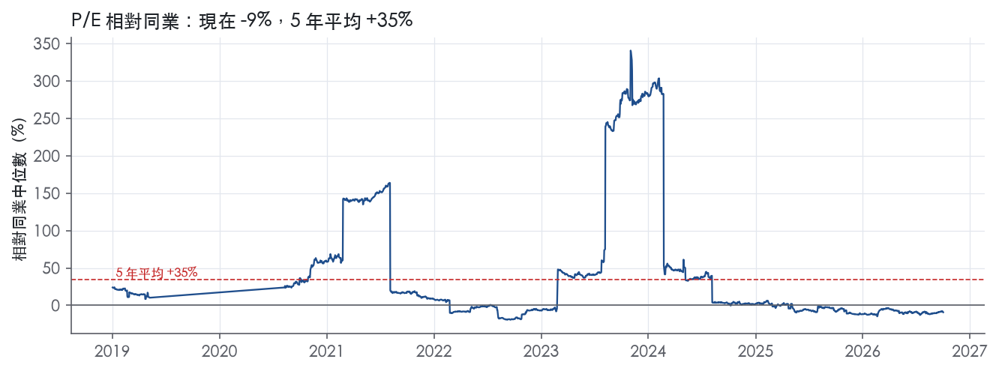
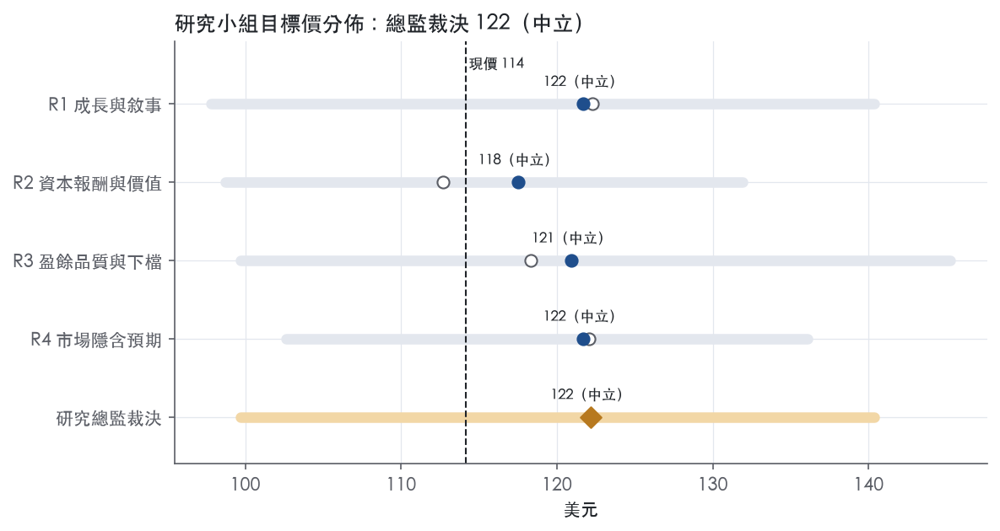
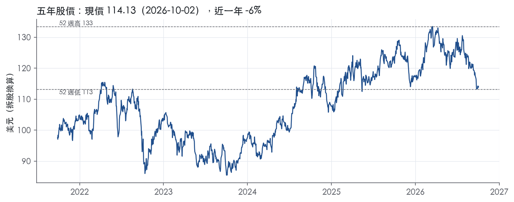

評等總表 › 公用事業 › DUK
倍數持平，費率複利被稀釋抵銷，中性｜評等 中立｜目標價 122
| 報告日 | 評等 | 目標價 | 當時股價 | 超額報酬 |
|---|---|---|---|---|
| 2026-10-02 | 中立 | 122 | 114 | +0.5% |
| 2026-09-28 | 中立 | 120 | 113 | -0.2% |
| 評等 | 中立 |
| 12 個月目標價 | 122 美元 |
| 現價 | 114.13 美元（2026-10-02） |
| 預期報酬 | 股價 +7.0%＋股息 3.8%＝總報酬 +10.8%；同業籃門檻 10.2%，超額 +0.5% |
| 估值方法 | P/E 17.0x，套在第 5–8 季的EPS（也就是一年後的未來四季） |
| 三情境 | 熊 100／基準 124／牛 140 |
| 研究流程 | 四位研究員兩輪辯論＋研究總監裁決 |
| 資料來源 | SEC EDGAR XBRL、Tiingo、FRED（全免費） |
倍數持平，費率複利被稀釋抵銷，中性（研究總監裁決，四位研究員兩輪辯論後）
評等 中立｜12 個月目標價 122 美元（總監三情境機率加權 123 與研究員中位數 121 各半）｜現價 114.13（2026-10-02）
預期報酬：股價 +7.0%＋股息 3.8%＝總報酬 +10.8%。同業籃門檻 10.2%，超額 +0.5%。
估值方法：P/E 17.0x，套在第 5–8 季的EPS（也就是一年後的未來四季）。三情境：熊 100（22%）／基準 124（52%）／牛 140（26%）。
什麼會讓研究總監改變看法：NCUC核准ROE≥10.3%且增收達申請八成、公司揭露2027–28無需普通股增資，倍數往同業18.8x移、轉看多；核准不到一半或ROE<9.75%、信評展望轉負或年股數增幅>1.5%，轉看空。
| 過去四季（實際，FY2026Q2） | 未來四季 | 第 5–8 季 | 第 9–12 季 | |
|---|---|---|---|---|
| 營收（B） | 32.6B | 34.2B | 36.4B | 38.6B |
| 營收成長 | 5.2% | 5.0% | 6.5% | 6.0% |
| 營業利益率 | 28.3% | 28.1% | 28.3% | 28.3% |
| EPS（美元） | 6.68 | 6.58 | 7.30 | 7.91 |
| EPS 成長 | 8.3% | -1.6% | 11.0% | 8.4% |
| 每股股息（美元） | 4.26 | 4.26 | 4.26 | 4.26 |
| P/E（現價） | 17.1x | 17.4x | 15.6x | 14.4x |
| 股息殖利率（現價） | 3.8% | 3.7% | 3.7% | 3.7% |
過去四季為申報數字；預測為研究總監的假設、程式計算。倍數與殖利率都用現價計算，用來看現價對應各期獲利的高低。
| 項目 | 上次（2026-09-29） | 這次（2026-10-05） | 變動 |
|---|---|---|---|
| 評等 | 中立 | 中立 | ＝ |
| 機率加權目標價（美元） | 120 | 122 | +1.4% |
| 超額報酬 | -0.2% | 0.5% | +0.7 pp |
| 目標倍數 | 17.0x | 17.0x | — |
| 未來四季營收成長 | 5.5% | 5.0% | -0.5 pp |
| 未來四季營益率 | 27.7% | 28.1% | +0.4 pp |
| 未來四季 EPS（美元） | 6.54 | 6.58 | +0.6% |
| 熊／基準／牛機率 | 25／55／20 | 22／52／26 | — |
程式計算；「未來四季」各自從當次報告的資料起點算。研究總監逐點說明見第八章「與上次報告比較」。
| 情境 | 機率（歷史） | 故事 | 未來四季營收成長 | 第 5–8 季營益率 | 倍數 | 目標價 | 股價漲跌 |
|---|---|---|---|---|---|---|---|
| 熊 | 22%（21%） | 風險表第1條：核准增收不到申請一半或ROE<9.75%，固定D&A去槓桿後觸發第2條信用指標惡化與增資保信評，倍數依劇本-1x | 4.5% | 26.5% | 16.0x | 100 | -12.6% |
| 基準 | 52%（54%） | 費率案部分核准（ROE 9.75–10.3%），EPS隨費率基礎複利但被1.0%稀釋與利息吃掉一部分，倍數持平 | 5.0% | 28.3% | 17.0x | 124 | 8.8% |
| 牛 | 26%（25%） | NCUC核准ROE≥10.3%且增收達申請八成、資料中心負載加速、Brookfield如期交割，對同業折價收一半，倍數依劇本+1x | 6.0% | 29.0% | 18.0x | 140 | 23.0% |
目標價由程式依研究總監的驅動與倍數計算；機率由研究總監給定。括號內是歷史頻率：把這檔股票過去十年 12 個月報酬的波動形狀，置中在基準情境，結果落在各情境附近的比例。

四位研究員用不同方法各自估值，回應研究總監的質疑後交出第二輪，最後由總監逐點裁決。各研究員的主張見第七章，裁決理由見第八章，完整論證見《研究底稿》。
| 立場（一輪→二輪） | 加權目標價（一輪→二輪） | 評等（一輪→二輪） | 第二輪倍數 | 熊～牛目標價 | |
|---|---|---|---|---|---|
| R1 成長與敘事 | 看多→中性 | 122→122 | 中立→中立 | 17.0x | 98～140 |
| R2 資本報酬與價值 | 中性→中性 | 113→118 | 減碼→中立 | 18.0x | 99～132 |
| R3 盈餘品質與下檔 | 中性→中性 | 118→121 | 中立→中立 | 17.5x | 100～145 |
| R4 市場隱含預期 | 看多→中性 | 122→122 | 中立→中立 | 16.9x | 103～136 |
| 研究總監裁決 | 中性 | 122 | 中立 | 17.0x | 100～140 |
目標價由程式依各自的驅動與倍數計算；評等＝機率加權總報酬 − 同業籃門檻。
Duke Energy 是一家總部位於北卡夏洛特的受監管公用事業控股公司，透過 Duke Energy Carolinas、Progress Energy（含 Duke Energy Progress、Duke Energy Florida）、Duke Energy Ohio（含 Duke Energy Kentucky）、Duke Energy Indiana 與 Piedmont 等子公司在美國東南與中西部經營電力與天然氣業務¹。公司受 FERC 及多個州層級委員會（NCUC、PSCSC、FPSC、IURC、PUCO、KPSC 等）監管¹。本質上這是一家靠費率基礎（rate base）賺取資本回報的傳統管制公用事業，客戶黏著度極高、營收可預測性強，但成長全靠資本支出與費率案批准進度。FY2025 營收 31.74B 美元，年增 5.6%。
公司兩大可報告分部為「電力公用事業與基礎設施」（EU&I）與「天然氣公用事業與基礎設施」（GU&I），剩餘業務列為 Other¹。EU&I 透過 Duke Energy Carolinas、Progress、Florida、Indiana、Ohio 等受監管公用事業，向約 870 萬名零售電力客戶提供發電、輸電、配電與售電服務，服務區域約 9 萬平方英里、覆蓋六州、人口約 2,700 萬¹。EU&I 擁有約 55,713 MW 發電容量，燃料結構以天然氣（33.5%）、核能（27.5%）、煤（14.5%）為主，另有約 22.5% 來自外購電力¹。GU&I 透過 Piedmont、Duke Energy Ohio、Duke Energy Kentucky 服務約 180 萬名天然氣客戶，其中卡羅萊納州 100 萬戶、田納西州 20.5 萬戶、俄亥俄西南及肯塔基北部 56.5 萬戶¹。10-K 未揭露兩大分部各自佔集團營收與 EBITDA 的具體比重，但從資產規模與客戶數看，EU&I 明顯是主引擎、GU&I 為輔助成長腿。Other 主要是控股公司利息支出、未分攤公司費用與對 NMC（持股 17.5%，沙烏地阿拉伯石化合資公司）的投資，非報告分部¹。
公司正在調整資產組合：2025 年 8 月與 Brookfield Super-Core Infrastructure Partners 關係企業簽署投資協議，Duke Energy 將收取 6B 美元，換取對方未來預期持有 Duke Energy Florida 19.7% 的間接股權，交易將分批完成¹。同時 Piedmont 於 2025 年 7 月與 Spire Inc. 簽署收購協議，出售其田納西州業務，預計 2026 年 3 月 31 日完成，尚待 TPUC 等慣例條件核准¹。這兩筆交易方向一致：引入外部資本、精簡非核心資產，把資本導向核心受監管電力與天然氣基礎設施。
EU&I 零售售電結構以 Duke Energy Carolinas 為例，住宅占 33%、商業 33%、工業 21%、零售合計 87%、批發及其他 13%；Duke Energy Florida 零售占比高達 96%，顯示各子公司批發暴露程度差異大¹。2025 年住宅客戶數持續成長，商業用電受數據中心用電需求支撐而走強，但工業用電因部分製造業廠房關閉及高利率影響而偏弱¹。公司預期長期住宅單位用電量會因節能家電普及而承壓，但北卡的脫鉤費率（decoupled rates）與其他州的費率設計機制可部分緩解此衝擊對整體獲利的影響¹。GU&I 服務區涵蓋北卡、南卡、田納西（納什維爾都會區，待出售）、俄亥俄與肯塔基，客戶數預期在剔除田納西業務後仍會持續增加¹。通路上，公司在絕大多數服務區域是唯一供電／供氣業者，僅俄亥俄州有競爭性電力供應拍賣市場，EU&I 在當地只賺輸配電利差、不賺能源成本價差¹。
FY2025Q3（截至 2025-09-30）營收 8.38B 美元，年增 3.1%，營益率 27.9%，淨利 1.42B 美元，EPS 1.81（fact: FY2025Q3 表列數據）。FY2025Q4（截至 2025-12-31）營收 7.77B 美元，年增 7.4%，營益率 27.3%，淨利 1.18B 美元，EPS 1.52（fact: FY2025Q4 表列數據）。FY2026Q1（截至 2026-03-31）營收跳升至 8.99B 美元，年增 9.5%，營益率擴大至 30.3%（全年最高），淨利 1.55B 美元，EPS 1.97，但該季 FCF 為 -2.58B 美元，資本支出壓力明顯。FY2026Q2（截至 2026-06-30）營收回落至 7.43B 美元、年增僅 0.7%，營益率 27.6%，淨利 1.09B 美元，EPS 1.38，FCF 為 -1.39B 美元（fact: FY2026Q2 表列數據）。整體看，過去四季營收與獲利呈現典型公用事業的季節性波動（夏冬用電旺季、春秋淡季），FY2026 累計 LTM 營收 32.57B 美元、EBITDA 16.97B 美元、GAAP 稀釋 EPS 6.68，但 LTM FCF 為 -4.27B 美元，反映資本支出週期仍處於高峰、尚未轉正。未取得公司次季財測原文（本次未提供 8-K 新聞稿）。
公司將成長歸因於「穩健的經濟發展組合」帶動商業與工業售電量成長，以及住宅客戶數持續增加¹。公司明確點名數據中心用電需求是支撐商業用電走強的重要因素¹。在監管面，公司透過多年期費率計畫（MYRP）與各類成本回收機制（如北卡 Integrity Management Rider、俄亥俄 CEP Rider）鎖定資本支出的回報路徑，目前仍有北卡 Duke Energy Carolinas（申請增加營收 1,002M 美元）與 Duke Energy Progress（申請增加營收 729M 美元）兩案待核准、預計 2027 年 1 月生效¹。核能資產方面，公司正尋求把現有反應爐的運轉執照延長 20 年，Oconee 已於 2025 年 3 月取得延役至 2054 年的核准，Robinson 的延役申請已於 2025 年 4 月提出¹。資本配置上，公司透過引入 Brookfield 對 Duke Energy Florida 的少數股權投資（換取 6B 美元）及出售 Piedmont 田納西業務來為成長資本支出融資、同時精簡資產組合¹。
總結來看，這是一家「費率基礎驅動＋資料中心用電順風」的管制電力公司，成長性完全綁定州級費率案審核節奏與核能延役進度，不是市場驅動型成長股。短期 FCF 持續為負反映資本支出週期尚未見頂，淨負債仍在爬升（dv/bs 系列顯示 FY2025 淨負債 89.59B 美元），槓桿壓力值得留意。Brookfield 的資本注入與田納西資產處分是財務工程型的資金來源，而非業務本質的改變，判斷公司核心敘事仍是穩定股息＋費率案驅動的低波動收益型持股。

Duke Energy 的特許經營權非常耐久，但它保護的是「賺回資本成本」，不是「賺超過資本成本」，依本章定義評為無護城河。量化底稿顯示 ROIC 在有資料的 9 年中，高於資本成本代理值的年數為 0 年。近三年 ROIC 走高，但 10 年債殖利率 5.24同步墊高資金成本，兩者相抵，判斷差距沒有實質收斂，趨勢定為穩定。
本公司的結構性優勢屬於效率規模與無形資產（監管授權）兩類，但兩者都受到費率管制封頂。
效率規模：除俄亥俄州外，EU&I 是各服務區域內唯一的電力供應商¹。GU&I 在其零售服務區域內是唯一的天然氣供應商¹。EU&I 擁有約 55,713 MW 發電容量，服務約 870 萬名客戶，服務區域約 90,000 平方英里¹。在這種規模的輸配電網旁邊另建一套平行網路沒有經濟意義，新進者的威脅可以忽略。
無形資產（監管授權）：州公用事業委員會核發的 CPCN 與 CECPCN，授權 EU&I 興建、營運電力設施並向零售與批發客戶售電¹。NRC 已核准 Oconee 再延役 20 年至 2054 年¹。Duke Energy 打算為 Duke Energy Carolinas 與 Duke Energy Progress 營運的每一座反應爐申請 20 年運轉執照延展¹。這些執照是數十年期的進入障礙，競爭者無法複製。
這兩類優勢的上限被費率制度直接寫死：費率的設計是涵蓋服務成本，再加上投入資本的「合理報酬」¹。核能燃料成本每千瓦時 0.58 美分，低於天然氣的 3.95 美分¹。但燃料成本變動對營運結果沒有重大影響¹，這項差距會轉給客戶，不構成股東可保留的成本優勢，因此不列入。
數字證實了「穩定」，但否定了「超額報酬」。
穩定性很明確：毛利率十年平均 71.4%、標準差 0.5%，ROIC 標準差 0.5%。營業利益率十年介於 19.7% 到 27.2%，標準差 2.5%。這種波動度符合受管制、成本可轉嫁的商業模式。
超額報酬不存在：ROIC 十年平均 4.7%、最高 5.6%，資本成本代理值 10.2%，平均差距為 -5.5%。ROE 十年平均 7.0%，最低 2.9%。對照近年核准的 ROE，Duke Energy Indiana 2024 年費率案為 9.75%，Duke Energy Florida 2024 年費率案為 10.3%¹。這代表公司過去十年實際賺到的報酬，連監管者「允許」的水準都沒達到，存在明顯的監管遞延（regulatory lag）。
數字跟一般「公用事業有護城河」的印象衝突，我們的處理如下。資本成本代理值（10 年債＋5%）偏向一般股票，可能高估受管制事業的實際資金成本，所以 ROIC 與代理值的差距不宜全數視為價值毀損。但即使換成最寬鬆的基準，也就是監管核准的 ROE，公司歷史上仍然落後；最新 ROE 9.7%才剛接近核准區間的下緣。我們沒有把握未來 5 年以上報酬能穩定高於資本成本，依定義只能給無。
最大的威脅不是競爭者，而是監管者與資金成本。
第一是費率案結果：兩件北卡待決案件申請的 ROE 為 10.95%，生效日為 2027 年 1 月¹。核准值若明顯低於申請值，報酬回升的路徑就會中斷。第二是利率：高利率環境下，核准 ROE 的調整速度落後資金成本上升的速度，代理值差距會擴大。第三是資本支出週期：LTM FCF 為 -4.27B 美元，FCF 利潤率十年平均 -7.8%，持續依賴外部融資。第四是分散式發電：受管制配電業務的競爭主要來自替代能源，包括商業或工業客戶的自有發電，以及私人太陽能等分散式發電¹。第五是審慎性審查：委員會若認定部分成本不審慎，相關成本回收會受影響¹。
目標倍數應與受管制公用事業同業持平，不給溢價。理由是公司的特許權耐久、現金流可預測，但 ROIC 從未高於資本成本，沒有支撐溢價倍數的超額報酬。目前 P/E 17.1x 已落在 5 年分位 0.4%，低於 5 年中位數 21.4x，所以若要回升到中位數，催化劑應該是北卡費率案核准 ROE 接近申請值，而不是護城河本身。
| 指標 | 最新 | 十年平均 | 標準差 | 最低 | 最高 |
|---|---|---|---|---|---|
| ROIC | 5.6% | 4.7% | 0.5% | 4.1% | 5.6% |
| 毛利率 | 72.0% | 71.4% | 0.5% | 70.9% | 72.0% |
| 營業利益率 | 27.2% | 23.0% | 2.5% | 19.7% | 27.2% |
| FCF 利潤率 | -5.3% | -7.8% | 5.2% | -19.0% | 0.2% |
| ROE | 9.7% | 7.0% | 2.0% | 2.9% | 9.7% |
程式計算。資本成本代理值（10 年債＋5%）：10.2%；ROIC 平均減資本成本：-5.5%；ROIC 有資料的 9 年中，高於資本成本 0 年。
Duke 的淨利有應計與現金流雙重佐證：應計比率 LTM -3.2%、近三年 -4.0%、十年 -3.3%，全部落在綠燈區；但自由現金流／淨利 LTM -0.81x、近三年 -0.43x、十年 -0.71x 持續為負，加上淨負債／EBITDA LTM 5.34x、利息保障倍數僅 2.45x，顯示盈餘品質的風險不在「做出來的利潤」，而在「用舉債撐起來的現金流與資本結構」。這在重資本、受費率管制的電力燃氣公司中是常態，但仍構成對估值的實質限制，故評為中品質而非高品質。
營業現金流持續且穩定地超過淨利，LTM 為 2.20x，近三年平均 2.89x，十年平均 2.98x，皆為綠燈，代表損益表上的淨利並非靠非現金項目堆出來的。應計比率同樣是負值且逐年穩定（LTM -3.2%、近三年 -4.0%、十年 -3.3%），負值越大代表盈餘比現金流更保守，這是加分項。但把資本支出算進去之後情況完全反轉：自由現金流／淨利 LTM 僅 -0.81x，近三年平均 -0.43x，十年平均 -0.71x，全部紅燈。年度 FCF 本身從 FY2016 到 FY2025 幾乎每年為負，僅 FY2024 短暫轉正 0.05B（is/），FY2025 又轉回 -1.69B（is/）。這代表 CFO 強勁只是前半段故事，後半段是資本支出常年吃掉全部內生現金流，公司長期靠外部融資（舉債）補資本支出與股息缺口。
本次未取得最新財報新聞稿，因此無法列出公司自行揭露的非 GAAP 調整項目與金額，此段無法完成原本要求的逐項列示。從可得的計分表看，SBC／營收僅 0.3%（LTM、近三年、十年皆同），遠低於紅燈門檻 8.0%，代表股權薄酬並非拉高盈餘的主要調整項，公用事業本身也少用股權激勵取代現金薪酬。在沒有新聞稿佐證的前提下，建議估值研究員之後補抓最新一期財報新聞稿，確認是否有一次性重組費用、資產減損或監管訴訟準備金等調整項，再決定要不要在 GAAP EPS 之外另做調整後 EPS 的估值基礎。
槓桿是本案最明確的結構性問題：淨負債／EBITDA LTM 5.34x，近三年平均 5.79x，十年平均 5.86x，三個期間都紅燈，且淨負債本身十年間從 49.99B一路攀升到 89.59B，升幅遠高於 EBITDA 從 9.08B到 16.33B的成長。利息保障倍數因此被壓在 2.45x（LTM）、2.35x（近三年）、2.46x（十年），全部低於 3.00x 紅燈門檻，代表付息能力長期偏薄，對利率上行較敏感，而目前十年期美債殖利率已來到 5.24%，再融資成本壓力不小。資本配置上，股利加回購占淨利十年平均達 108.7%，超過 100% 的部分代表公司長年用舉債在支付股東回饋，而非完全靠自由現金流；稀釋股數年變動 LTM 0.0%、近三年 0.3%、十年平均 1.3%，顯示公司並未靠大量發股稀釋現有股東來填補現金缺口，股數管理相對乾淨。
自由現金流／淨利紅燈（LTM -0.81x，近三年平均 -0.43x）：這是受監管電力燃氣公司的結構性特徵，不是盈餘品質造假的訊號。資本支出／營收十年間穩定維持在 34.7%–45.7% 區間（量化底稿年度表），對應費率基礎（rate base）的持續擴張，公司在多個轄區都有在建的輸配電、天然氣基建與核能延役計畫，10-K 明確提到「繼續延長 11 座反應爐的運轉執照至本世紀中葉以後」及大量資本支出需求²。這筆資本支出理論上可經費率案回收，但現金流時間落差（10-K 提到天然氣成本回收存在時間差會影響現金流時點）確實存在³，因此這個紅燈是真實的現金壓力，但屬於可由監管資產基礎解釋的結構性負 FCF，而非一次性或造假問題。
淨負債／EBITDA 紅燈（LTM 5.34x，近三年平均 5.79x）：這是真實且持續的高槓桿，不是會計口徑問題。十年來淨負債幾乎單向攀升（至 FY2025），同步於資本支出擴張，公司明確表示未來發電轉型、核能延役與輸配電升級仍需巨額資本投入²。槓桿水準本身並未因單一年度事件而跳動，是長期資本密集經營模式的結果，對估值構成實質限制，需要在倍數比較時打折。
利息保障倍數紅燈（LTM 2.45x，近三年平均 2.35x）：這是前述槓桿紅燈的直接延伸，兩者互為因果，不是獨立的新問題。公司在 10-K 中多次強調監管機構核准的股本報酬率（ROE）約 9.6%–9.8%、股本占資本結構比約 52%（10-K 表格），顯示費率結構理論上支持穩定的利息與股本回報能力，但實際利息保障仍偏薄，代表槓桿的絕對水位已侵蝕緩衝空間，這點需要持續追蹤，而非一次性噪音。
淨利率 FY2020→FY2021 跳動 +10 個百分點：本次節錄的 10-K Item 7／Item 1A 內容集中在業務描述、法規與環境風險，並未包含 FY2020–FY2021 損益細項或一次性項目說明，因此無法用原文證據判定跳動原因。從年度表看，FY2020 淨利 1.38B、EPS 1.72明顯低於前後年度（FY2019 EPS 5.06、FY2021 EPS 4.94），較可能是單一年度的減損或一次性費用壓低了 FY2020 基期，使 FY2021 呈現「回升式」跳動，而非 FY2021 虛增，但在缺乏原文佐證的情況下，這屬於待驗證紅旗，建議之後補抓 FY2020、FY2021 10-K 的減損或特殊項目揭露再做最終判斷。
估值應以 GAAP 盈餘為主要基礎，因為本次沒有新聞稿可佐證非 GAAP 調整的規模與真實性，不應假設性地對盈餘加回。現金轉換（CFO/NI）本身健康，不需要對經常性盈餘打太重的品質折價，但自由現金流持續為負與槓桿、利息保障雙紅燈，代表公司對外部資本市場的依賴度高，這會限制可承受的 EV/EBITDA 與 P/E 倍數上緣，應用低於同業中位數的倍數，或在 DCF 中提高股權成本以反映財務風險。目前 trailing P/E 17.1x、EV/EBITDA 10.6x 已低於五年與十年中位數（band 表），顯示市場本身已部分反映這些槓桿風險，估值研究員可將現有折價視為合理起點，不必再額外疊加大幅品質折讓。
| 項目 | LTM | 近三年 | 十年 | 燈號 | 規則 |
|---|---|---|---|---|---|
| 營業現金流／淨利 | 2.20x | 2.89x | 2.98x | 綠 | ≥1.00x 綠、<0.80x 紅 |
| 自由現金流／淨利 | -0.81x | -0.43x | -0.71x | 紅 | ≥0.90x 綠、<0.60x 紅 |
| 應計比率（(淨利−CFO)／平均總資產） | -3.2% | -4.0% | -3.3% | 綠 | ≤0.0% 綠、>5.0% 紅 |
| SBC／營收 | — | 0.3% | 0.3% | 綠 | ≤3.0% 綠、>8.0% 紅 |
| 淨負債／EBITDA | 5.34x | 5.79x | 5.86x | 紅 | ≤1.50x 綠、>3.00x 紅 |
| 利息保障倍數（營業利益／利息） | 2.45x | 2.35x | 2.46x | 紅 | ≥8.00x 綠、<3.00x 紅 |
| 稀釋股數年變動 | 0.0% | 0.3% | 1.3% | 綠 | ≤0.0% 綠、>3.0% 紅 |
| （股利＋回購）／淨利 | — | — | 108.7% | — | ≥50.0% 綠、<0.0% 紅 |
| 應收帳款成長 − 營收成長（FY2025） | -104.8pp | — | — | 綠 | ≤5pp 綠、>15pp 紅 |
程式計算；燈號以 LTM（無則近三年平均）判定。
| 風險 | 觸發指標（看什麼數字、在哪裡看） | 對 EPS 的影響方向與粗略幅度 | 未來 12 個月發生機率（高／中／低） | 出處 |
|---|---|---|---|---|
| 費率案被打折或延遲核准（北卡 Carolinas 申請增加營收 1,002M 美元、Progress 申請 729M 美元，預計 2027/1 生效） | NCUC／PSCSC 裁決公告；核准金額對比申請金額的比例 | 負向；大（核准金額每低於申請一定比例即直接侵蝕受監管資產的允許報酬） | 中 | ＋² |
| FCF 持續為負、淨負債攀升推升再融資與信評壓力 | 季度 FCF（最新 -1.39B，FY2026Q2）；淨負債（90.56B）；信評展望公告 | 負向；中～大（若信評被調降至非投資級，需追加抵押品，直接增加利息費用） | 中 | 【量化底稿：、】＋² |
| 大型資本專案（新建發電、輸電）延誤或成本超支且不可完全回收 | 在建工程（CWIP）金額變化；資本支出/營收比（FY2025 為 44.2%）；專案延遲或取消的公告 | 負向；中～大，視不可回收比例而定（原文無具體百分比） | 中 | ²＋【量化底稿：FY2025 資本支出/營收】 |
| 核能延役與新環保法規（EPA GHG 規則、CCR 2024 規則）推升合規成本且不保證全額回收 | NRC 延役核准進度（Oconee 已核准至 2054、Robinson 申請中）；EPA/CCR 相關訴訟或新規公告 | 負向；中（原文無具體金額，僅稱「material」） | 低～中 | ＋² |
| 極端天氣／天然災害造成修復成本無法即時或全額回收 | 重大風災公告；暴雨/颶風季節性損失揭露於季報 MD&A | 負向；中（季度間波動大，但長期多可透過監管機制回收） | 中 | 10-K 年報 FY2025 Item 1A（風險因素） |
費率案風險排第一，因為它直接決定營收基礎能不能跟上資本支出。 公司目前有北卡 Carolinas（申請增加營收 1,002M 美元）與 Progress（申請 729M 美元）兩案待核，預計 2027 年 1 月生效。10-K 明言若監管機構不允許成本回收，或遲延核准，將直接衝擊結果²。這是管制公用事業最核心的盈餘變數，因為 EPS 成長幾乎完全綁定費率基礎的允許報酬率能否兌現。
FCF 與槓桿風險排第二。 LTM FCF 為 -4.27B 美元，過去四季單季 FCF 多為負值（最新一季 -1.39B 美元），淨負債已達 90.56B 美元，相較 FY2016 的 49.99B 美元幾乎翻倍（is/bs 年度表）【量化底稿】。10-K 明確指出若信評被調降至投資等級以下，須額外提供信用狀或現金抵押品，將顯著侵蝕流動性與獲利能力²。目前美國 10 年期公債殖利率 5.24%，公用事業這類高槓桿、資本密集產業對利率敏感度高，再融資成本上升會直接壓縮淨利。
大型資本專案延誤或超支排第三。 10-K 列舉工期延誤、監管或場址許可延遲、設備與人力成本超預期等風險，且明言若專案完工總成本高於預估或被認定不合理，可能被拒絕納入費率基礎回收，或導致減損²。FY2025 資本支出/營收比達 44.2%（年度表），顯示公司處於資本支出高峰期，任何回收失敗都會直接侵蝕 ROIC。
核能延役與環保合規成本排第四。 公司核能機組延役進度不一，Oconee 已獲准延役至 2054 年，Robinson 延役申請仍在審理中；若 NRC 未核准任一機組延役，將影響公司 2050 淨零目標的達成路徑，也可能迫使提前退役並產生減損²。同時 2024 年 4 月 EPA 新規對燃煤電廠課以更嚴格的 GHG 與空氣毒物限制，且對 CCR 管理單元新增地下水監測與整治義務，10-K 稱可能顯著提高合規資本支出與營運成本，但未揭露具體金額²。
極端天氣風險排第五。 公司服務區涵蓋颶風帶（卡羅萊納、佛州）與中西部風暴帶，10-K 指出修復成本可能重大，且若監管機制未能即時或全額核准回收，將衝擊現金流與獲利²。此風險季節性強、單季衝擊可能大，但多數司法管轄區已有風災成本回收機制，長期財務影響通常可控。
Brookfield 少數股權交易與 Piedmont 田納西資產出售的執行風險未被列入正式風險因子。 業務概況章指出 Duke Energy Florida 擬透過 Brookfield 關係企業交易收取 6B 美元、換取對方未來持有 19.7% 間接股權，Piedmont 田納西業務出售案預計 2026 年 3 月 31 日完成但尚待 TPUC 核准。10-K 一般性地提到「策略交易未能完成」的風險，但未具體點名這兩筆交易的失敗情境，而這兩筆交易的資金正是公司彌補當前 FCF 缺口、支應資本支出的重要來源，若延遲或破局將直接惡化槓桿與融資壓力，值得單獨監測。
數據中心負載的集中度與波動性未充分量化。 業務概況章提到商業用電成長受數據中心需求支撐，10-K Item 1A 也提及「hyperscale data centers」等大型負載的高需求、快速波動與不可預測操作特性會對電網穩定造成額外壓力，且若投資未能完全回收、服務協議提前終止，可能產生擱淺資產²。但公司未揭露數據中心客戶占營收或用電量的具體比重，這塊成長引擎同時也是潛在的客戶集中度風險，一旦大型科技客戶自建電源或放緩擴張計畫，衝擊難以事先量化，建議後續追蹤商業用電年增率與個別大型合約續簽狀況。
現價 114.13 對應 trailing（過去四季）P/E 17.1x、EV/EBITDA 10.6x、EV/EBITA 19.5x、EV/Sales 5.5x、FCF 殖利率 -4.8%。主要估值倍數 P/E 現在 17.1x，落在5 年區間第 0 百分位（P10／P50／P90 = 18.9x／21.4x／53.5x）。

把程式的機械基準預測放到現價下，市場付的前瞻倍數是：P/E（未來四季） 16.9x、P/E（第 5–8 季） 15.5x。反推 DCF 顯示市價隱含未來五年營收年成長 104.2%（WACC 9.0%、終值成長 3.0%、FCF 利潤率 0.3%，SBC 不加回）。
| 倍數 | 現在 | 5 年 P10 | 5 年 P50 | 5 年 P90 | 現在分位 | 全期 P50 |
|---|---|---|---|---|---|---|
| P/E | 17.1x | 18.9x | 21.4x | 53.5x | 0.4% | 23.0x |
| EV/EBITDA | 10.6x | 11.2x | 12.1x | 13.8x | 0.4% | 12.1x |
| EV/EBITA | 19.5x | 20.9x | 22.6x | 28.5x | 0.4% | 22.6x |
| EV/EBIT | 19.5x | 20.9x | 22.6x | 28.5x | 0.4% | 22.6x |
| EV/Sales | 5.5x | 5.1x | 5.7x | 6.0x | 32.3% | 5.6x |
| P/S | 2.7x | 2.5x | 2.9x | 3.3x | 29.1% | 2.9x |
| P/FCF | 1942.1x | — | — | — | — | 807.0x |
trailing 倍數（股價 ÷ 過去四季）；分位以每個交易日計算。
同業籃：SO, NEE, D, AEP, XEL, ED（手動名單（playbooks/peers.yaml））。評等門檻 10.2%：同業「倍數不變下持有一年」的隱含報酬中位數（＝ FCF 殖利率 ×(1＋g)＋g，g 為 5 年營收年複合成長並夾在 −2%～8%），每家夾在 0～15%、P/E 低於 5 倍視為資料可疑而排除，中位數再限制在 10 年債到 10 年債＋5% 之間（同業原始中位數 12.5%）。
| 代號 | 市值 | 5 年營收 CAGR | 營益率 | ROIC | P/E | 5 年 P/E 中位數 | EV/EBITDA | P/FCF | 隱含報酬 |
|---|---|---|---|---|---|---|---|---|---|
| DUK | 89.0B | 6.4% | 28.3% | 5.6% | 17.1x | 21.4x | 10.6x | — | 12.7% |
| SO | 94.4B | 7.7% | 24.2% | 6.0% | 21.4x | 23.1x | 12.4x | — | 12.7% |
| NEE | 160.2B | 8.7% | 31.7% | 6.0% | 19.5x | 25.6x | 17.3x | — | 13.5% |
| D | 53.9B | 3.1% | 26.3% | 5.2% | 18.1x | 21.3x | 15.0x | — | 8.8% |
| AEP | 65.4B | 8.0% | 24.0% | 6.8% | 17.5x | 18.4x | — | 25.2x | 12.2% |
| XEL | 44.6B | 1.9% | — | 4.9% | 19.5x | 20.9x | 14.3x | — | 7.1% |
| ED | 37.7B | 6.7% | 17.4% | 4.8% | 17.4x | 18.7x | 7.4x | — | 12.8% |
| 同業中位數 | 7.2% | 24.2% | 5.6% | 18.8x | 21.1x | 14.3x | 25.2x | 10.2% |
全部 trailing，程式以各公司 SEC XBRL 與 Tiingo 行情計算；第一列為本檔。
P/E 相對同業中位數：現在 -9.3%，過去 1 年平均 -9.2%、3 年 40.1%、5 年 34.8%；EV/EBITDA 相對同業中位數：現在 -26.4%，過去 1 年平均 -23.7%、3 年 -13.0%、5 年 -12.5%。

事後實現前瞻倍數帶（P/E，2018-08-17..2025-08-15）：P10／P50／P90 = 16.6x／20.8x／54.2x。它是每個交易日的股價除以之後四季實際實現的指標；一年後，今天的第 5–8 季正是那時的未來四季，所以這條帶是 12 個月目標價的同口徑倍數。因為用的是事後實際而非當時預期，過去成長超乎預期的公司這條帶會偏低。
程式的機械基準（成長率從過去四季年增率三年收斂到 6%、利潤率持平）用 事後實現前瞻 P/E P50 估值得到 154（34.6%），市場現行前瞻倍數（現價 ÷ 基準 未來四季指標）一年後持平，套在基準 第 5–8 季指標得到 125。這兩個數字只是參考點，不是本報告的目標價；研究員對這個定價的回應在第七章。
下表是每位研究員第一輪（各自獨立）與第二輪（回應研究總監的質疑後）的結果。目標價全由程式依各自的假設計算。
| 立場（一輪→二輪） | 加權目標價（一輪→二輪） | 評等（一輪→二輪） | 第二輪倍數 | 熊～牛目標價 | |
|---|---|---|---|---|---|
| R1 成長與敘事 | 看多→中性 | 122→122 | 中立→中立 | 17.0x | 98～140 |
| R2 資本報酬與價值 | 中性→中性 | 113→118 | 減碼→中立 | 18.0x | 99～132 |
| R3 盈餘品質與下檔 | 中性→中性 | 118→121 | 中立→中立 | 17.5x | 100～145 |
| R4 市場隱含預期 | 看多→中性 | 122→122 | 中立→中立 | 16.9x | 103～136 |
| 研究總監裁決 | 中性 | 122 | 中立 | 17.0x | 100～140 |
目標價由程式依各自的驅動與倍數計算；評等＝機率加權總報酬 − 同業籃門檻。
分歧度：第一輪 加權目標價 113～122（區間＝現價的 8%）· 倍數 16.5～18.5x · 立場 看多×2、中性×2；第二輪 加權目標價 118～122（區間＝現價的 4%）· 倍數 16.9～18x · 立場 中性×4（方向一致）。

| 研究員 | 第二輪主張 | 堅持的理由 |
|---|---|---|
| R1 成長與敘事 | 中性，給17.0x，EPS隨費率基礎複利，不設倍數重估。 | 熊情境給15.0x，因為信評一旦調降，倍數會一次被壓下。 |
| R2 資本報酬與價值 | 絕對持平、相對同業減碼，給18.0x，落在同業18.8x下方。 | 股數年增1.0%不讓步：自由現金流為負，維持52%股本比必須增資。 |
| R3 盈餘品質與下檔 | 中性，給17.5x，盈餘是真的，只拿掉槓桿那層折價。 | 利息上升會吃掉費率提升，營益率由27.8%逐年降到27.2%。 |
| R4 市場隱含預期 | 中性，給16.9x，等於市場持平，不設重估。 | 市場低估2027年營益率：他估28.8%，基準只有28.3%。 |
每位研究員的逐條回應與完整論證見《研究底稿》（DUK_研究底稿_2026-10-05.docx）。
| 分歧點 | R1 | R2 | R3 | R4 | 什麼資料會分出勝負 |
|---|---|---|---|---|---|
| 目標倍數與口徑 | 17.0x eps@q5_q8，前瞻帶 P10–P25 間、略高於持平 | 18.0x eps@ntm，同業 18.8x 下方（＝自家 1y P10） | 17.5x eps@q5_q8，貼 P25，拿掉槓桿那層折價 | 16.9x eps@q5_q8，市場持平、不設重估 | NCUC 裁決後 DUK 對同業 P/E 折價是否自 -9.3% 收窄；Brookfield 交割 8-K 揭露 DEF 隱含倍數 |
| 利息與少數股權入模；Q5–Q8 營益率 | 28.5%，不扣利息，少數股權走股數 1.0% | 28.3%（基準），少數股權走股數 1.0% | 27.5%→27.2% 遞減：利息走營益率、不給費率案抬升 | 28.3%＝經濟 28.8% − 0.5pp 利息與少數股權拖累 | FY2026 利息保障是否 ≤2.45x；FY2027Q1 營益率對 FY2026Q1 30.3% |
| NTM／Q5–Q8 營收成長 | 5.0／6.5% | 5.0／5.7% | 5.5／5.7%（基準） | 4.5／7.0% | NCUC 核准增收對 DEC 1,002M、DEP 729M 申請的比例；FY2027Q1 營收年增 |
| 情境機率與牛熊順序 | 27／45／28（歷史 27／57／16） | 22／54／24（歷史 31／45／24） | 15／65／20（歷史 17／60／23） | 25／52／23（歷史 30／44／26） | 無事前資料可分；NCUC 裁決落點決定結果落哪一區 |
倍數：裁 R1，17.0x eps@q5_q8。 R2 的口徑不合劇本主尺；他的 18.0x 套 NTM 得 120，低於市場持平參考 125，等於主張市場一年後付得更少，而兩個理由都站不住：「稀釋」已放進他的 share_change 1.0%，重複計算；「槓桿」被 R3 自己的證據否定——DUK 5 年 P/E 中位 21.4x與同業 21.1x 平價，當時槓桿還更高（淨負債／EBITDA 十年均 5.86x，財務體質章）。R3 據此推到 17.5x，但「折價不是槓桿」只說明折價在等北卡裁決與 Brookfield 落地，沒有證據說基準情境（部分核准）下折價會收；R4 的反證直接：這一年折價 -9.2%→-9.3%（同業表）沒動。17.0x 幾乎等於市場持平 16.9x，落在事後實現前瞻帶 P10 16.6x 與 P25 17.6x 之間，高於持平的那一點對應北卡裁決在 12 個月內落地、二元不確定性消失。R1 以「樣本期利率低於 5.24%」當不往 P25 靠的理由不成立（規則 7），但不影響結論。
營益率：裁 R4。 基準模型把利息按 LTM 持平，期末淨負債卻由 93.81B 升到 100.28B，利息該入模，R3、R4 都對。但 R3 一路降到 27.2%（＝FY2025 全年），等於不給北卡費率案任何營業利益貢獻；費率增收先回收 D&A 與 O&M，資本報酬裡的債務報酬卻落在利息之上，會撐開營益率。八季表三季年增——FY2026Q1 30.3% 對 FY2025Q1 28.5%、FY2026Q2 27.6% 對 FY2025Q2 24.8%、FY2025Q3 27.9% 對 FY2024Q3 26.4%——加上 FY2023 24.7%→FY2025 27.2% 的年度趨勢，不支持單向遞減。R4 的淨額（經濟 28.8% 扣 0.5pp 回到 28.3%）同時尊重兩股力量；R1 的 28.5% 沒扣利息。y1 取 R4 的 28.1%：新費率未生效、Brookfield 分批交割。
營收：裁 R1，5.0／6.5／6.0%。 DEC 申請增收 1,002M、DEP 729M，2027 年 1 月生效（10-K FY2025），全額落在 Q5–Q8、只有一半落在 NTM；R2、R3 的 5.7% 是 LTM 收斂路徑，沒有這個階梯。R4 的 7.0% 疊在 4.5% 的 y1 上，兩年累計與 R1 幾乎一樣，差別只是田納西出售基期效應擺多少——交割無人能確認，R1 把它標為假設、把 y1 依據放在 FY2026Q2 年增 0.7%，較乾淨。FY2022 +17.1%、FY2023 0.0%（is.revenue）提醒營收含燃料轉嫁，y2 不往 7.0% 走。
機率：own。 四人中三人熊高於牛；程式對照顯示 R1、R2 的距離下歷史是牛高於熊，R3 順序合歷史只因他的牛放到 +19%。本部 22 份報告全部熊＞牛，是偏誤不是慣例。公司特有檢驗：北卡裁決是兩面的，申請 10.95% 對近年核准 9.75%／10.3%（護城河章）意味「低於申請」本來就是基準不是熊；股價在 52 週低點、P/E 落 5 年分位 0.4%，市場已預付一部分壞結果。沒有向下偏斜的公司證據，依歷史。
漂移處理。 R2（靠攏 51%）與 R3（70%）比例高，但改動有對應證據：R2 撤回低於 LTM 的營益率是回應轉發的八季年增資料；R3 熊 30%→20% 是回應程式算的歷史對照（他原熊距離 -25% 的歷史頻率 12%）、17.5x 是回應同業平價資料，不退回。退回一項：R2 把牛機率由 25% 砍到 22%，而程式對照他的牛區是 31%，沒有說明，以第一輪 25% 看待。
與機械基準不同的驅動（其餘沿用）：
目標倍數 17.0x，eps@q5_q8。錨：市場持平前瞻 P/E 16.9x一年後持平，加北卡裁決落地的半步；口徑與事後實現前瞻帶同（P10 16.6x／P25 17.6x／P50 20.8x），落在 P10–P25。不取 P50：FY2020 EPS 1.72、FY2022 EPS 3.17（is.diluted_eps）的谷底視窗墊高中段。不取劇本錨 own_pe_5y_p50 21.4x 與同業 18.8x：前者含同樣的谷底視窗，且類股已從同業 5 年中位 21.1x 重定價到 18.8x；後者對應的 -9.3% 折價一年未動，不假設收斂。護城河評無，不給溢價。股息率 3.8% 低於 10 年債 5.24%是類股狀態，不用來壓倍數（規則 7）。
現價對基準 Q5–Q8 EPS 7.38 付 15.5x（基準模型市場隱含），市場持平 16.9x 給 125。我們的 17.0x 等於持平，倍數上與市場沒有分歧；盈餘上我們的 Q5–Q8 EPS 略低於機械基準（稀釋 1.0%、y1 5.0%、y1 營益率 28.1%，被 y2 6.5% 部分抵銷），也不是反向主張。報酬來源是 EPS 複利加 3.8% 股息，落在同業門檻 10.2% 附近，立場中性。若程式評等為加碼，超額來自股息與成長略高於門檻，不是我們認為市場錯了，差距在 2–3 個百分點內，不改立場。
現價 114.13 → 點估目標價 124 → 機率加權目標價 123 → 目標價 122，差距拆成五段：成長順延 +10 美元（市場現行倍數 16.9x 一年後持平、獲利照機械基準）；倍數差 +1 美元（總監倍數 17.0x vs 市場持平倍數 16.9x，同一機械基準預測）；盈餘差 -1 美元（總監預測的第 5–8 季EPS 0.0B vs 機械基準 0.0B，同一倍數）；情境不對稱 -1 美元（機率加權減點估）；研究小組平均 -1 美元（總監機率加權 123 與研究員第二輪中位數 121 各半）。各段相加等於目標價減現價。本階段未接賣方共識，差距以市場隱含預期為對照。
| 驅動 | 機械基準 | 研究總監 | 差異 |
|---|---|---|---|
| 未來四季營收成長 | 5.5% | 5.0% | -0.5 pp |
| 第 5–8 季營收成長 | 5.7% | 6.5% | +0.8 pp |
| 第 9–12 季營收成長 | 6.0% | 6.0% | ＝ |
| 未來四季營益率 | 28.3% | 28.1% | -0.2 pp |
| 第 5–8 季營益率 | 28.3% | 28.3% | ＝ |
| 第 9–12 季營益率 | 28.3% | 28.3% | ＝ |
| D&A／營收 | 23.8% | 23.8% | ＝ |
| 資本支出／營收 | 48.6% | 48.6% | ＝ |
| SBC／營收 | 0.0% | 0.0% | ＝ |
| 稅率 | 11.2% | 11.2% | ＝ |
| 股數年變動 | 0.3% | 1.0% | +0.7 pp |
研究總監只寫偏移，未寫的沿用基準。
| 期 | 營收 | 成長 | 營益率 | 營業利益 | EBITDA | EBITA | 淨利 | EPS | FCF | 期末淨負債 |
|---|---|---|---|---|---|---|---|---|---|---|
| 未來四季 | 34.2B | 5.0% | 28.1% | 9.6B | 17.7B | 9.6B | 5.2B | 6.58 | -3.3B | 93.9B |
| 第 5–8 季 | 36.4B | 6.5% | 28.3% | 10.3B | 19.0B | 10.3B | 5.8B | 7.30 | -3.2B | 97.1B |
| 第 9–12 季 | 38.6B | 6.0% | 28.3% | 10.9B | 20.1B | 10.9B | 6.4B | 7.91 | -3.2B | 100.3B |
程式依上表的驅動計算；季度用最近四季季節性分攤；不含營運資金變動。
估值方法：P/E 17.0x，套在第 5–8 季的EPS（也就是一年後的未來四季）。研究總監目標倍數的錨：市場持平前瞻P/E 16.9x一年後持平加北卡裁決落地半步，落在事後實現前瞻帶P10 16.6x與P25 17.6x之間；P50 20.8x受FY2020/FY2022 EPS谷底墊高不取；對同業18.8x維持現行-9.3%折價不假設收斂，護城河無不給溢價。
計算：EPS（第 5–8 季） 7.30 × 17.0x → 點估目標價 124（8.8%）；隱含 P/E（未來四季）18.9x、P/E（第 5–8 季）17.0x、EV/EBITDA（第 5–8 季）10.1x、FCF 殖利率（第 5–8 季）-3.3%。
總監三情境機率加權目標價 123，研究員第二輪中位數 121，兩者各半＝目標價 122；預期報酬 股價 +7.0%＋股息 3.8%＝總報酬 +10.8%；減評等門檻 10.2%（同業籃隱含報酬中位數（SO, NEE, D, AEP, XEL, ED））＝超額報酬 +0.5% → 評等 中立（超額 >+15% 買進、+5～+15% 加碼、±5% 中立、−5～−15% 減碼、<−15% 賣出）。同一份資料重開研究小組，超額約有正負四個百分點的雜訊（一個標準差，二十檔實測）；以此估計，評等落在其他級距的機率約二成。
| 情境 | 機率 | 未來四季成長 | 第 5–8 季成長 | 第 5–8 季營益率 | EPS（第 5–8 季） | 倍數 | 目標價 |
|---|---|---|---|---|---|---|---|
| 熊 | 22% | 4.5% | 4.0% | 26.5% | 6.23 | 16.0x | 100 |
| 基準 | 52% | 5.0% | 6.5% | 28.3% | 7.30 | 17.0x | 124 |
| 牛 | 26% | 6.0% | 7.5% | 29.0% | 7.80 | 18.0x | 140 |
| 主張 | 驗證日 | 看哪個數字 | 門檻 |
|---|---|---|---|
| NCUC對DEC與DEP費率案核准ROE皆不低於9.75%，且核准增收合計不低於兩案申請合計的一半 | 2027-01-31 | NCUC核准ROE與核准增收/申請增收 | ROE>=9.75% 且 比例>=50% |
| FY2026全年GAAP營益率落在LTM附近，FY2026Q1 30.3%為季節高點而非趨勢峰值 | 2027-02-28 | 27.8%–28.6% | |
| 新費率生效後首個完整季EPS高於去年同季的高基期 | 2027-05-15 | > 1.97 | |
| 負FCF與配發率超過100%使股本融資回來 | 2027-08-15 | FY2027Q2稀釋加權股數年增率 | >= 0.5% |
到期由程式結算（第 5 階段帳本）。
內文上標數字對應下列公司申報文件；未標上標的分析與判斷，是研究小組的觀點。報告中的每個數字都經程式逐一核對資料包或原文。
| 期 | 營收 | 成長 | 毛利率 | 營益率 | EBITDA | 淨利 | EPS | CFO | FCF | ROIC | 淨負債 | 稀釋股數 |
|---|---|---|---|---|---|---|---|---|---|---|---|---|
| FY2016 | 22.7B | — | 70.9% | 22.9% | 9.1B | 2.2B | 3.11 | 6.9B | -1.0B | — | 50.0B | 0.7B |
| FY2017 | — | — | — | — | 9.7B | 3.1B | 4.36 | 6.6B | -1.4B | 4.3% | 54.1B | 0.7B |
| FY2018 | 23.8B | — | 71.2% | 19.7% | 9.4B | 2.7B | 3.76 | 7.2B | -2.2B | 4.1% | 57.5B | 0.7B |
| FY2019 | 24.3B | 2.5% | 72.0% | 23.4% | 10.9B | 3.7B | 5.06 | 8.2B | -2.9B | 4.8% | 61.0B | 0.7B |
| FY2020 | 23.3B | -4.5% | — | 19.7% | 10.1B | 1.4B | 1.72 | 8.9B | -1.1B | 4.2% | 62.5B | 0.7B |
| FY2021 | 24.5B | 5.3% | — | 22.5% | 11.2B | 3.9B | 4.94 | 8.3B | -1.4B | 4.5% | 66.8B | 0.8B |
| FY2022 | 28.7B | 17.1% | — | 21.0% | 11.9B | 2.5B | 3.17 | 5.9B | -5.4B | 4.7% | 73.3B | 0.8B |
| FY2023 | 28.7B | -0.0% | — | 24.7% | 13.2B | 2.8B | 3.54 | 9.9B | -2.7B | 5.1% | 79.3B | 0.8B |
| FY2024 | 30.1B | 4.8% | — | 26.4% | 14.3B | 4.5B | 5.71 | 12.3B | 0.0B | 5.4% | 84.0B | 0.8B |
| FY2025 | 31.7B | 5.6% | — | 27.2% | 16.3B | 5.0B | 6.31 | 12.3B | -1.7B | 5.6% | 89.6B | 0.8B |
SEC XBRL；每股數據已依拆股換算到現在股數基準。EBITDA 空白 = 該年無形攤銷在 companyfacts 中缺 tag。
| 期 | 期末 | 推導 | 營收 | 毛利率 | 營益率 | EBITDA | 淨利 | EPS | CFO | FCF | 現金 | 總債務 |
|---|---|---|---|---|---|---|---|---|---|---|---|---|
| FY2023Q3 | 2023-09-30 | 8.0B | — | 26.5% | 3.7B | 1.3B | 1.59 | 3.5B | 0.5B | 0.3B | 78.5B | |
| FY2023Q4 | 2023-12-31 | Q4 | 7.1B | — | 26.0% | 3.4B | 1.0B | 1.27 | 2.6B | -0.7B | 0.3B | 79.5B |
| FY2024Q1 | 2024-03-31 | 7.5B | — | 26.1% | 3.5B | 1.1B | 1.44 | 2.5B | -0.7B | 0.5B | 81.4B | |
| FY2024Q2 | 2024-06-30 | 7.2B | — | 23.9% | 3.3B | 0.9B | 1.13 | 3.0B | -0.0B | 0.4B | 82.4B | |
| FY2024Q3 | 2024-09-30 | 8.1B | — | 26.4% | 3.8B | 1.3B | 1.60 | 3.5B | 0.5B | 0.4B | 84.1B | |
| FY2024Q4 | 2024-12-31 | Q4 | 7.2B | — | 29.2% | 3.7B | 1.2B | 1.56 | 3.4B | 0.3B | 0.3B | 84.3B |
| FY2025Q1 | 2025-03-31 | 8.2B | — | 28.5% | 4.0B | 1.4B | 1.76 | 2.2B | -1.0B | 0.5B | 86.4B | |
| FY2025Q2 | 2025-06-30 | 7.4B | — | 24.8% | 3.8B | 1.0B | 1.25 | 2.9B | -0.4B | 0.3B | 87.4B | |
| FY2025Q3 | 2025-09-30 | 8.4B | — | 27.9% | 4.4B | 1.4B | 1.81 | 3.6B | 0.2B | 0.7B | 88.6B | |
| FY2025Q4 | 2025-12-31 | Q4 | 7.8B | — | 27.3% | 4.1B | 1.2B | 1.52 | 3.7B | -0.5B | 0.2B | 89.8B |
| FY2026Q1 | 2026-03-31 | 9.0B | — | 30.3% | 4.6B | 1.6B | 1.97 | 1.5B | -2.6B | 2.1B | 90.2B | |
| FY2026Q2 | 2026-06-30 | 7.4B | — | 27.6% | 3.9B | 1.1B | 1.38 | 2.8B | -1.4B | 0.7B | 91.2B |
流量項目由 10-Q 的年初至今數拆成單季；Q4 = 年度 − 九個月。

本報告由 equity-desk 多代理系統產出，建置中版本，僅供內部研究與方法驗證，不構成投資建議。所有數字以 datapack.json 為準。